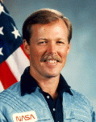

Lyndon B. Johnson Space Center
Houston, Texas 77058
|
National Aeronautics and Space Administration Lyndon B. Johnson Space Center Houston, Texas 77058 |
 |
Biographical Data |
||
Robert L. Gibson (Captain, USN Ret.)
NASA Astronaut (former)
PERSONAL DATA: Born October 30, 1946, in Cooperstown, New York, but considers Lakewood, California, to be his hometown. Married to Dr. M. Rhea Seddon of Murfreesboro, Tennessee. Four children. He enjoys home built aircraft, formula one air racing, running and surfing during his free time. His mother, Mrs. Paul A. Gibson, resides in Seal Beach, California; his father is deceased. Her father, Mr. Edward C. Seddon, resides in Murfreesboro; her mother is deceased.
EDUCATION: Graduated from Huntington High School, Huntington, New York, in 1964; received an associate degree in engineering science from Suffolk County Community College in 1966, and a bachelor of science degree in aeronautical engineering from California Polytechnic State University in 1969.
SPECIAL HONORS: Awarded the Federation Aeronautique Internationale (FAI) “Louis Bleriot Medal” (1992), and the Experimental Aircraft Association (EAA) “Freedom of Flight” Award (1989). Established world records for “Altitude in Horizontal Flight,” Airplane Class C1A in 1991, and “Time to Climb to 9000 Meters” in 1994. Military awards include: the Defense Superior Service Medal; the Distinguished Flying Cross; 3 Air Medals; the Navy Commendation Medal with Combat “V”; a Navy Unit Commendation; Meritorious Unit Commendation; Armed Forces Expeditionary Medal; Humanitarian Service Medal; and Vietnam Campaign Medal.
EXPERIENCE: Gibson entered active duty with the Navy in 1969. He received primary and basic flight training at Naval Air Stations Saufley Field and Pensacola, Florida, and Meridian, Mississippi, and completed advanced flight training at the Naval Air Station at Kingsville, Texas.
While assigned to Fighter Squadrons 111 and 1, during the period April 1972 to September 1975, he saw duty aboard the USS Coral Sea (CVA-43) and the USS Enterprise (CVAN-65) -- flying combat missions in Southeast Asia. He is a graduate of the Naval Fighter Weapons School, "Topgun." Gibson returned to the United States and an assignment as an F-14A instructor pilot with Fighter Squadron 124. He graduated from the U.S. Naval Test Pilot School, Patuxent River, Maryland, in June 1977, and later became involved in the test and evaluation of F-14A aircraft while assigned to the Naval Air Test Center’s Strike Aircraft Test Directorate.
His flight experience includes over 6,000 hours in over 50 types of civil and military aircraft. He holds airline transport pilot, multi-engine, and instrument ratings, and has held a private pilot rating since age 17. Gibson has also completed over 300 carrier landings.
NASA EXPERIENCE: Selected by NASA in January 1978, Gibson became an astronaut in August 1979. Gibson has flown five missions and has completed a total of 36-1/2 days in space. He served as pilot on STS-41B (February 3-11, 1984), and was spacecraft commander on STS-61C (January 12-18,1986), STS-27 (December 2-6, 1988), STS-47 (September 12-20, 1992), and STS-71 (June 27 to July 7, 1995). Gibson participated in the investigation of the Space Shuttle Challenger accident, and also participated in the redesign and recertification of the solid rocket boosters. Gibson served as Chief of the Astronaut Office (December 1992 to September 1994) and as Deputy Director, Flight Crew Operations (March-November 1996).
Gibson left NASA in November 1996 to pursue private business interests.
SPACE FLIGHT EXPERIENCE: STS-41B launched from the Kennedy Space Center, Florida, on February 3, 1984. The flight accomplished the proper Shuttle deployment of two Hughes 376 communications satellites which failed to reach desired geosynchronous orbits due to upper stage rocket failures. Rendezvous sensors and computer programs were flight tested for the first time. The STS 41-B mission marked the first checkout of the Manned Maneuvering Unit (MMU), and Manipulator Foot Restraint (MFR), with Bruce McCandless and Bob Stewart performing two spectacular EVA’s (space walks). The German Shuttle Pallet Satellite (SPAS), Remote Manipulator System (RMS), six "Getaway Specials," and materials processing experiments were included on the mission. The eight-day orbital flight of Challenger culminated in the first landing on the runway at the Kennedy Space Center on February 11, 1984. Mission duration was 191 hours, 15 minutes, 55 seconds.
STS-61C Columbia launched from the Kennedy Space Center, Florida, on January 12, 1986. During the six-day flight the seven-man crew aboard the Orbiter Columbia deployed the SATCOM KU satellite and conducted experiments in astrophysics and materials processing. The mission concluded with a successful night landing at Edwards Air Force Base, California, on January 18, 1986. Mission duration was 146 hours, 3 minutes, 51 seconds.
STS-27 Atlantis launched from the Kennedy Space Center, Florida, on December 2, 1988. The mission carried a Department of Defense payload, and a number of secondary payloads. After 68 orbits of the Earth the mission concluded with a dry lakebed landing on Runway 17 at Edwards Air Force Base, California, on December 6, 1988. Mission duration was 105 hours, 6 minutes, 19 seconds.
STS-47, Spacelab-J, the 50th Space Shuttle mission, launched on September 12, 1992. The mission was a cooperative venture between the United States and Japan, and included the first Japanese astronaut as a member of the seven-person crew. During the eight-day flight, the crew aboard the Orbiter Endeavour focused on life science and materials processing experiments in over forty investigations in the Spacelab laboratory, as well as scientific and engineering tests performed aboard the Orbiter Endeavour. After 126 orbits of the Earth, the mission ended with a successful landing on the runway at the Kennedy Space Center in Florida on September 20, 1992. Mission duration was 190 hours, 30 minutes, 23 seconds.
STS-71 (June 27 to July 7, 1995), carried a crew of seven-members (up) and eight-members (down) on Space Shuttle mission STS-71 was the first Space Shuttle mission to dock with the Russian Space Station Mir, and involved an exchange of crews. The Atlantis Space Shuttle was modified to carry a docking system compatible with the Russian Mir Space Station. It also carried a Spacelab module in the payload bay in which the crew performed various life sciences experiments and data collections. Mission duration was 235 hours, 23 minutes.
SEPTEMBER 1997
This is the only version available from NASA. Updates must be sought direct from the above named individual.
{kind=link}